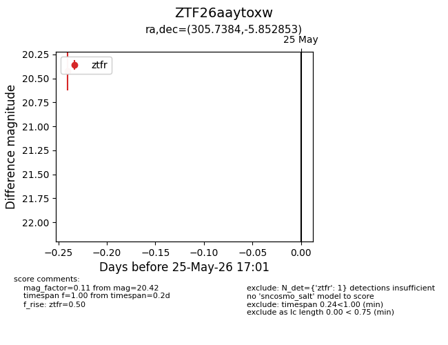
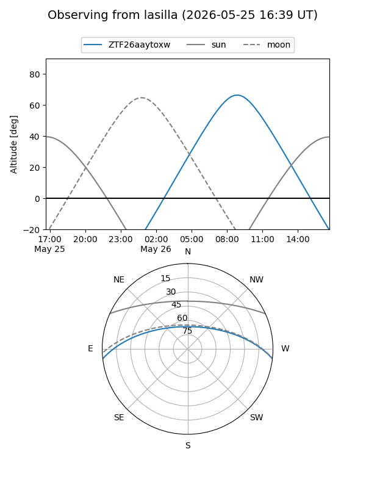
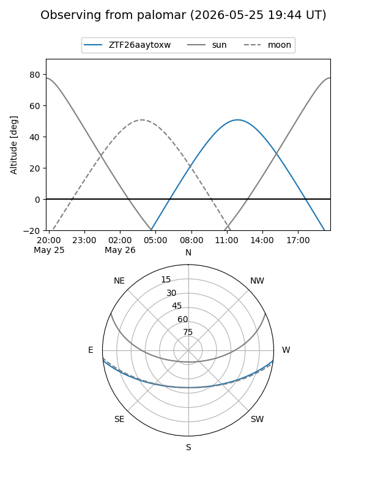

ZTF26aaytoxw
Target ZTF26aaytoxw at 2026-05-25 17:03
Aliases and brokers:
lsst-FINK: link
lsst-Lasair: link
lsst-ALeRCE: link
ztf-FINK: link
ztf-Lasair: link
ztf-ALeRCE: link
alt names
ZTF26aaytoxw (ztf,fink_ztf)
Coordinates:
equatorial (ra, dec) = 305.7384,-5.85285
equatorial (HMS+DMS) = 20:22:57.20,-05:51:10.27
galactic (l, b) = (38.2676,-22.99857)
Flags:
Photometry:
last ztfr=20.42
1 ztfr detections
Lightcurve

Visibility


Additional plots